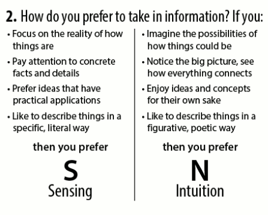

<h1>Sensing  or Intuitive?</h1>
<br>
<div class="dividerShort"></div>
<a class = "btn btn-primary" role = "button" href = "#" 
routerLink = '/es'>Sensing</a>

<div class="dividerLong"></div>

<a class = "btn btn-primary" role = "button" href = "#" 
routerLink = '/en'>Intuitive</a>